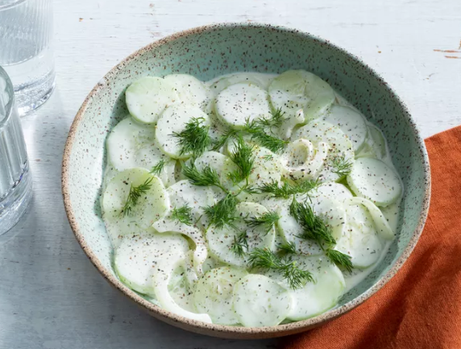

Home
Cucumber Salad

Crisp and creamy cucumber salad makes the perfect summer side. This old-fashioned recipe combines
thinly sliced sweet onions, cucumbers, dill, garlic, and mayo for an unbelievably delicious make-ahead dish.
Try your hand at this family favorite recipe for the tastiest cucumber salad ever.
Ingredients
- 2 large cucumbers, peeled and thinly sliced
- 1/2 cup mayonnaise
- 1/4 cup sour cream
- 1 tablespoon white vinegar
- 1 tablespoon sugar
- Salt and pepper to taste
- Fresh dill, chopped (optional)
Steps to make this yummy salad
- In a large bowl, combine the mayonnaise, sour cream, white vinegar, sugar, salt, and pepper. Mix well.
- Add the sliced cucumbers and onions to the bowl. Toss gently to coat the vegetables with the dressing.
- If using, sprinkle fresh dill over the salad and mix again.
- Cover and refrigerate for at least 30 minutes before serving to allow the flavors to meld.
- Serve chilled as a refreshing side dish.